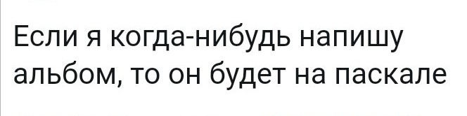
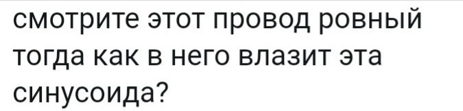

Имя: Зайцева Настя.
Дата рождения: 13 июля 1999
e-mail: pingozavr666@yandex.ru
Телефон:8(920)360-18-04
В 2017 году закончила школу №39 в городе Иваново. В данное время учусь на втором курсе в Ивановском государственном химико-технологическом университете. Факультет техники, управления и цифровой инфраструктуры. Направление: Информационные системы и технологии.
Закончила Ивановскую художественную школу в 2016 году.
|  |  |